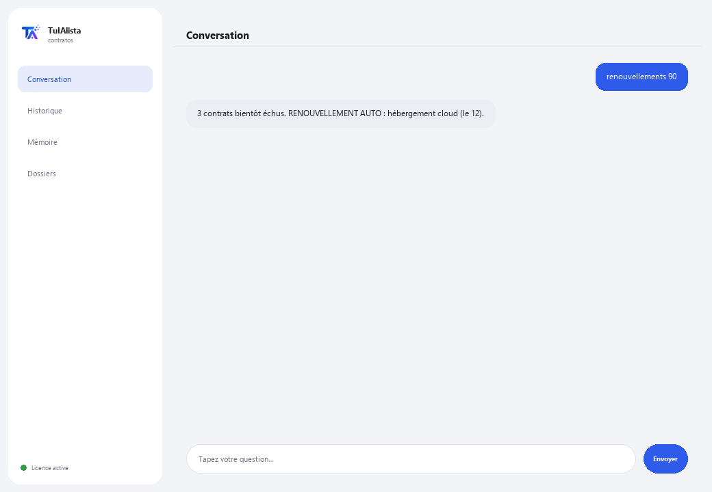

Agent Contrats et renouvellements
Lit vos contrats pour vous, vous avertit de ce qui se renouvelle automatiquement et détecte les clauses à risque avant qu'elles ne vous coûtent de l'argent.
Que résout-il et de quoi avez-vous besoin ?
Beaucoup d'entreprises perdent de l'argent à cause de choses écrites dans un contrat que personne n'a relu : un service qui se renouvelle automatiquement, une pénalité d'annulation, une hausse de prix automatique. Cet agent lit vos contrats et vous avertit de l'important avant qu'il ne soit trop tard.
- Vous avez besoin de : votre clé de licence (TIA-XXXX-XXXX-XXXX-XXXX) et du dossier contenant vos contrats (PDF, Word ou texte). Ni Python ni connaissances techniques.
- Premier résultat en moins de 5 minutes : vous installez, activez, choisissez votre dossier et lancez renouvellements pour voir ce qui arrive bientôt à échéance.
- Vos contrats ne quittent jamais votre ordinateur — l'analyse s'exécute localement.
soporte@tuialista.com ou visitez tuialista.com/soporte — nous répondons généralement le jour même.1 Ce que fait cet agent
Vous lui indiquez le dossier où vous gardez vos contrats et il :
- Les lit tous (PDF, Word et texte), sans que vous ayez à les ouvrir un par un.
- Vous avertit des contrats qui arrivent bientôt à échéance ou se renouvellent dans les prochains jours.
- Détecte 10 types de clauses à risque et vous dit lesquelles sont délicates.
- Vous donne un résumé clair de n'importe quel contrat en quelques secondes.
- Répond à vos questions en langage normal : “lequel de mes contrats se renouvelle automatiquement ?”
Résultat : vous arrêtez d'avoir des surprises et avez le temps de négocier ou d'annuler avant la date limite.
2 Installation (2 minutes)
Pour Windows. Pas besoin d'internet permanent ni de rien envoyer sur le cloud.
Téléchargez l'installateur depuis tuialista.com/descargar (agent Contrats) et ouvrez-le. Il crée un raccourci sur votre bureau avec le logo — pas besoin de Python ni de terminal.
Double-cliquez sur la nouvelle icône. Collez votre clé de licence (reçue par e-mail à l'achat) et cliquez sur Activer. Une coche verte apparaît quand elle est valide.
Sélectionnez le dossier contenant vos contrats et cliquez sur Commencer à utiliser l'agent. La prochaine fois, il démarre directement — il se souvient de votre clé et de votre dossier.
3 Comment l'utiliser
L'agent ouvre une fenêtre de discussion, comme une app de messagerie — pas un écran noir de programmeur. Vous écrivez votre commande ou votre question dans le champ de texte en bas, cliquez sur Envoyer (ou Entrée), et la réponse apparaît comme un message, exactement comme sur cette image réelle :

Les commandes suivantes sont les mots que vous pouvez écrire dans ce même champ de texte :
> renouvellements [jours]Contrats avec des dates de renouvellement ou d'échéance proches — 60 jours par défaut. Marque “RENOUVELLEMENT AUTO” ceux qui se renouvellent seuls si vous ne les annulez pas à temps. Ex. : renouvellements 90.
> résumé <fichier>Résumé exécutif du contrat en langage clair : de quoi il s'agit, les parties, l'argent, les dates et les alertes.
> risques <fichier>Seulement les clauses à risque détectées, avec leur niveau d'alerte (ÉLEVÉ, MOYEN, FAIBLE).
> analyser <fichier>Extraction complète : parties, dates, montants, s'il a un renouvellement auto et toutes ses clauses à risque.
> question libre ?Écrivez toute question en langage naturel, ex. : lesquels de mes contrats ont une pénalité si je les annule avant terme ?
> quitterTermine la session (fonctionne aussi avec exit).
4 Exemples d'usage courant
Détecter les contrats à renouvellement automatique
Le cas le plus coûteux : un service qui se renouvelle pour une année de plus parce que personne n'a averti à temps. renouvellements 120 — vérifiez ceux marqués “RENOUVELLEMENT AUTO”.
Vérifier les risques avant de signer
On vous a envoyé un nouveau contrat : enregistrez-le dans votre dossier et risques nouveau-contrat.pdf — en quelques secondes vous voyez s'il contient une exclusivité, des pénalités ou une juridiction étrangère.
Préparer une réunion de renouvellements
renouvellements 60 → résumé contrat-clé.pdf
Trouver une information sans ouvrir chaque fichier
combien je paie mensuellement pour le contrat cloud et quand ça augmente ?
5 Questions fréquentes
Mes contrats sont-ils envoyés sur internet ?
Ai-je besoin d'internet pour l'utiliser ?
Quels formats accepte-t-il ?
Peut-il lire un PDF scanné ?
Remplace-t-il mon avocat ?
Combien de contrats peut-il gérer ?
Les données affichées sont-elles 100 % exactes ?
Dans quelle langue répond-il ?
Puis-je changer le dossier ?
Que signifient ÉLEVÉ, MOYEN et FAIBLE dans les risques ?
6 Résolution de problèmes
Un PDF ne se lit pas / affiche “PDF non lu”
Affiche “0 contrats indexés”
Affiche “Licence invalide” ou demande de se reconnecter
“Aucun fournisseur d'IA configuré”
Aucune de ces solutions n'a résolu votre problème ? Écrivez-nous directement — nous serons ravis de l'examiner avec vous.
soporte@tuialista.com ou visitez tuialista.com/soporte — nous répondons généralement le jour même.7 Confidentialité
Vos contrats ne quittent jamais votre ordinateur.
- L'agent lit et analyse les fichiers localement, sur votre propre appareil. Il ne les envoie à aucun serveur ni ne les partage avec personne.
- La détection des renouvellements, montants et clauses à risque se produit à 100 % sur votre machine, hors ligne.
- La seule chose qui transite par internet est : (1) une vérification que votre licence est active — qui n'inclut pas le contenu de vos contrats —, et (2) lors d'une demande de résumé ou d'une question libre, un fragment du contrat est envoyé au moteur d'IA pour rédiger la réponse.